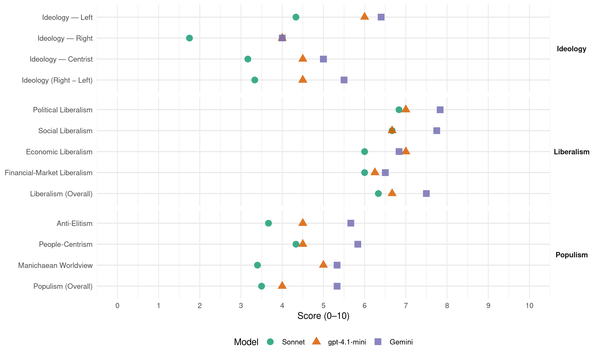

SDSM (North Macedonia, 2011)
manifesto_id 89221_201106
Get full text: This site shows derived annotations and short verbatim quotes only. The full manifesto text is © Manifesto Project / WZB — obtain it via manifesto-project.wzb.eu using the manifesto_id above.
Headline scores
| Dimension | Sonnet | gpt-4.1-mini | Gemini |
|---|---|---|---|
| Populism (Overall) | 3.5 | 4.0 | 5.3 |
| Anti-Elitism | 3.7 | 4.5 | 5.7 |
| People-Centrism | 4.3 | 4.5 | 5.8 |
| Manichaean Worldview | 3.4 | 5.0 | 5.3 |
| Ideology (Right − Left) | 3.3 | 4.5 | 5.5 |
| Liberalism (Overall) | 6.3 | 6.7 | 7.5 |
| Political Liberalism | 6.8 | 7.0 | 7.8 |
| Social Liberalism | 6.7 | 6.7 | 7.8 |
| Economic Liberalism | 6.0 | 7.0 | 6.8 |
| Financial-Market Liberalism | 6.0 | 6.2 | 6.5 |
Evidence per dimension
Economic Liberalism
Gemini · score 8.0 · verified · chunk 1
“подобар амбиент за бизнисот, за подобрување на конкурентноста”
Новата Влада ќе преземе низа мерки за подобар амбиент за бизнисот, за подобрување на конкурентноста и за поддршка
Gemini · score 7.0 · verified · chunk 2
“либерализирање на пазарот на електрична енергија”
соодветните законски измени новата Влада ќе овозможи: Постепено либерализирање на пазарот на електрична енергија и пазарот на природен гас.
Gemini · score 6.0 · verified · chunk 3
“средства на приватни странски, или домашни инвеститори”
50% сопствени средства на државата или кредити и 50% средства на приватни странски, или домашни инвеститори.
Gemini · score 7.0 · verified · chunk 4
“кредитна линија наменета за малите и средни претпријатија”
Дополнителни 50 милиони евра на кредитната линија наменета за малите и средни претпријатија (22.3.2011)
Gemini · score 7.0 · verified · chunk 5
“економски просперитет на стопанствениците”
обврската на државата да обезбеди рамноправни услови за економски просперитет на стопанствениците. Да бидеме јасни, ваквото
Gemini · score 6.0 · verified · chunk 6
“подобрување на инвестициската клима и на условите”
Ефикасното извршување придонесува за подобрување на инвестициската клима и на условите за стопанисување во државата
gpt-4.1-mini · score 8.0 · verified · chunk 1
“Политиката на инвестиции на новата Влада ќе се заснова на три клучни столба: Подобрување на бизнис климата и поддршка на производството на фирми со седиште во Република Македонија”
… ќе им го овозможи тоа на инвеститорите. Притоа, нема да ги подвојуваме фирмите на подобни и неподобни во зависност од партиската определба на сопствениците. Новата Влада ќе биде чесна и ќе биде пријател на бизнисот, влада која ја подобрува бизнис и инвестициската клима и, многу важно, влада којашто ќе поддржува независно судство коешто ќе ги гарантира правата на инвеститорот. Ќе ја исполниме и втората група услови што ги сака секој инвеститор, а тоа е професионална, ефикасна и некорумпирана јавна администрација. Политиката на инвестиции на новата Влада ќе се заснова на три клучни столба: Подобрување на бизнис климата и поддршка на производството на фирми со седиште во Република Македонија. Влез во НАТО, како гаранција за политичка и економска стабилност и предвидливост за сите инвеститори. Почеток на преговори со ЕУ и пристап до европските фондови. …
gpt-4.1-mini · score 7.0 · verified · chunk 2
“ќе ги укине сите царини за увоз на суровини и репроматеријали”
За поголема рамноправност на домашниот пазар и за поголем извоз новата Влада: Ќе ги укине сите царини за увоз на суровини и репроматеријали за текстилната индустрија. Ќе обезбеди средства за промоција на македонските текстилни производи на странските пазари.
gpt-4.1-mini · score 7.0 · verified · chunk 3
“зголемување на стапки на економски раст”
Ќе води сеопфатни политики што ќе резултираат со повисоки стапки на економски раст. Нема подобра покана за странските инвеститори од сознанието дека една земја брзо расте и дека растот ќе продолжи во иднина.
gpt-4.1-mini · score 7.0 · verified · chunk 4
“подобрување на бизнис климата со цел зголемување на домашното инвестирање”
Проект за Зголемување на инвестициите и поддршка за унапредување на извозот (подобрување на бизнис климата со цел зголемување на домашното инвестирање, привлекување повеќе странски директни инвестиции и зголемување на извозот на македонски производи - Буџет: 4.8 милиони американски долари, почеток на проектот 2010 година, завршување на проектот во 2014 година.
gpt-4.1-mini · score 6.0 · verified · chunk 5
“Ќе се преиспитаат основиците и стапките на придонесите. Ќе воведеме доброволно здравствено осигурување како дополнително осигурување”
…Ќе се дефинира единствен основен пакет на здравствени услуги на сите нивоа на здравствена заштита… Ќе се преиспитаат основиците и стапките на придонесите. Ќе воведеме доброволно здравствено осигурување како дополнително осигурување, со кое на граѓаните ќе им се даде можност да обезбедат повисока содржина…
gpt-4.1-mini · score 7.0 · verified · chunk 6
“Ефикасно извршување придонесува за подобрување на инвестициската клима и на условите за стопанисување во државата”
… Ефикасно извршување придонесува за подобрување на инвестициската клима и на условите за стопанисување во државата. Само самостојни и независни од власта извршители можат бескомпромисно да го спроведат законот и да покажат ефикасност. …
Sonnet · score 6.0 · mixed · chunk 1
“Приватниот сектор мора да биде локомотивата”
Приватниот сектор мора да биде локомотивата што ја влече напред македонската економија за да може нејзиниот раст да биде одржлив.
Sonnet · score 7.0 · verified · chunk 2
“Ќе ги укине сите царини за увоз на суровини”
За поголема рамноправност на домашниот пазар и за поголем извоз новата Влада: Ќе ги укине сите царини за увоз на суровини и репроматеријали за текстилната индустрија.
Sonnet · score 6.0 · verified · chunk 3
“Намалување на даночните и царинските оптоварувања”
Намалување на даночните и царинските оптоварувања на енергетски ефикасната опрема, машини и уреди.
Sonnet · score 5.0 · verified · chunk 4
“зголемување на домашното инвестирање, привлекување повеќе странски директни инвестиции”
подобрување на бизнис климата со цел зголемување на домашното инвестирање, привлекување повеќе странски директни инвестиции и зголемување на извозот
Sonnet · score 6.0 · verified · chunk 6
“подобрување на инвестициската клима и на условите за стопанисување”
Ефикасното извршување придонесува за подобрување на инвестициската клима и на условите за стопанисување во државата
Financial-Market Liberalism
Gemini · score 7.0 · verified · chunk 1
“олеснување на пристапот до финансиски средства”
За олеснување на пристапот до финансиски средства, новата Влада: Ќе формира гарантен фонд
Gemini · score 6.0 · verified · chunk 2
“кредитна линија во соработка со банки”
можност за промоција на нова кредитна линија во соработка со банки, или со помош од меѓународни финансиски институции.
Gemini · score 6.0 · verified · chunk 3
“Во македонскиот банкарски сектор влегоа светски познати”
Пример е банкарството. Во македонскиот банкарски сектор влегоа светски познати банкарски брендови, иако пазарот е мал
Gemini · score 7.0 · verified · chunk 4
“инвестираат друштвата за управување со пензиските фондови”
да се зголеми износот што ќе можат да го инвестираат друштвата за управување со пензиските фондови. На тој начин
gpt-4.1-mini · score 7.0 · verified · chunk 1
“Ќе формира гарантен фонд кој ќе им дава гаранции на банките за нивните кредити за земјоделците”
… пристапот до финансиски средства, новата Влада: Ќе формира гарантен фонд кој ќе им дава гаранции на банките за нивните кредити за земјоделците. Со таква првокласна гаранција ризикот за банките ќе биде помал, тие полесно ќе одобруваат кредити. Ќе предвиди поголема ангажираност на Македонската банка за поддршка на развојот во поглед на давање кредити и гаранции. Ќе направи промени во регулативата со кои ќе ги мотивира приватните пензиски фондови повеќе средства да насочуваат на домашниот пазар на капитал. …
gpt-4.1-mini · score 6.0 · verified · chunk 2
“ќе формира гарантен фонд за примарните производители преку Македонската банка”
Новата Влада ќе го олесни пристапот на примарните земјоделски производители до финансиски средства: Ќе формира гарантен фонд за примарните производители преку Македонската банка за поддршка на развојот или Министерството за земјоделство. Со овој фонд ќе се гарантираат обврските на примарните земјоделци за новоземени кредити од банките во износ до 80% од новоземениот кредит.
gpt-4.1-mini · score 7.0 · verified · chunk 4
“финансирање на Далеководот од Штип до Ниш”
Договорена поддршка во делот на: Финансирање на Далеководот од Штип до Ниш; Проект за Осигурување од климатски промени, поплави и слично; Поддршка при изградба на проектот „Луково Поле“; Во соработка со Интернационалната финансиска корпорација (IFC) ќе поддржи проект за изработка на пилот-студија за зелен одржлив развој на Р. Македонија.
gpt-4.1-mini · score 5.0 · verified · chunk 5
“Ќе ја зголемиме транспарентноста на работењето на Фондот, особено околу начинот на собирање и распределба на средствата на осигурениците.”
…Ќе ја зголемиме транспарентноста на работењето на Фондот, особено околу начинот на собирање и распределба на средствата на осигурениците. Ќе развиваме менаџерски капацитети во Фондот за здравствено осигурување. Ќе ја зајакнеме улогата на Фондот при утврдување на фискалната политика…
Sonnet · score 6.0 · mixed · chunk 1
“пристапот до финансиски средства и висината на каматните стапки”
Отворањето на работни места зависи од инвестициите, а тие зависат од пристапот до финансиски средства и висината на каматните стапки на банкарските кредити.
Sonnet · score 6.0 · verified · chunk 2
“кредити за закуп на земјоделско земјиште со ниски камати”
Ќе поттикнеме обезбедување на кредити за закуп на земјоделско земјиште со ниски камати (1-2%), подолг рок на отплата (15 г.) и максимално 10 хектари.
Sonnet · score 6.0 · verified · chunk 3
“македонскиот банкарски сектор влегоа светски познати банкарски брендови”
Пример е банкарството. Во македонскиот банкарски сектор влегоа светски познати банкарски брендови, иако пазарот е мал и има голема конкуренција. Битен е квалитетот на регулативата
Sonnet · score 6.0 · verified · chunk 4
“Кредитна линија во износ од 100 милиони евра”
Кредитна линија во износ од 100 милиони евра наменета за малите и средни претпријатија (одобрена за подобрување на ликвидноста на претпријатијата погодени од светската економска криза)
Sonnet · score 6.0 · verified · chunk 6
“финансискиот сектор, бизнис-едукативните институции”
ќе ги инволвира и недржавните актери: бизнис-здруженија, асоцијации на индустријата и на коморите, финансискиот сектор, бизнис-едукативните институции и think-tanks
Political Liberalism
Gemini · score 8.0 · verified · chunk 1
“независно судство коешто ќе ги гарантира правата”
пријател на бизнисот, влада која ја подобрува бизнис и инвестициската клима и, многу важно, влада којашто ќе поддржува независно судство коешто ќе ги гарантира правата на инвеститорот.
Gemini · score 7.0 · verified · chunk 2
“професионализација на државната администрација”
демонстрира решеност за професионализација на државната администрација согласно европските препораки.
Gemini · score 7.0 · verified · chunk 3
“ефикасноста и независноста на судството”
меѓу другото зголемувајќи ја ефикасноста и независноста на судството и ефикасноста на јавната администрација.
Gemini · score 8.0 · verified · chunk 4
“врати изгубената автономија на Универзитетот”
Новата Влада ќе ја врати изгубената автономија на Универзитетот! Новата Влада ќе направи основно
Gemini · score 9.0 · verified · chunk 5
“владеење на правото и еднаквоста”
веќе никој не верува во владеење на правото и еднаквоста на граѓаните пред законот. Уште
Gemini · score 8.0 · verified · chunk 6
“самостојни и независни од власта извршители”
Само самостојни и независни од власта извршители можат бескомпромисно да го спроведат
gpt-4.1-mini · score 7.0 · verified · chunk 1
“Нова Влада ќе биде чесна и ќе биде пријател на бизнисот, влада која ја подобрува бизнис и инвестициската клима и, многу важно, влада којашто ќе поддржува независно судство коешто ќе ги гарантира правата на инвеститорот”
… ќе им овозможи тоа на инвеститорите. Притоа, нема да ги подвојуваме фирмите на подобни и неподобни во зависност од партиската определба на сопствениците. Новата Влада ќе биде чесна и ќе биде пријател на бизнисот, влада која ја подобрува бизнис и инвестициската клима и, многу важно, влада којашто ќе поддржува независно судство коешто ќе ги гарантира правата на инвеститорот. Ќе ја исполниме …
gpt-4.1-mini · score 6.0 · verified · chunk 2
“ќе се користат странските искуства”
Новата Влада под итно ќе предложи измени и дополнувања на Законот за вработување, но и на сродните закони, со цел конечно да се регулира статусот на сезонските работници. Притоа, ќе се користат странските искуства. Текстилците заслужуваат посебно внимание.
gpt-4.1-mini · score 7.0 · verified · chunk 3
“зголемувањето на ефикасноста и независноста на судството”
Суштински ќе го подобри амбиентот, меѓу другото зголемувајќи ја ефикасноста и независноста на судството и ефикасноста на јавната администрација. Ќе ја подобрува регулативата за да ја усогласи што побрзо и што повеќе со европската.
gpt-4.1-mini · score 7.0 · verified · chunk 4
“Ќе овозможиме плурализам во студентското движење”
Ќе овозможиме плурализам во студентското движење - повеќе студентски организации ќе може да учествуваат во управување со Универзитетот. Во иднина Студентскиот парламент нема да биде единствената организација која ќе ги застапува интересите на студентите во универзитетот.
gpt-4.1-mini · score 7.0 · verified · chunk 5
“Ќе обезбедиме слободни и фер избори! Ќе ја почитуваме презумпцијата на невиност како темел на системот на владеење на правото.”
…Ниту едно обвинето лице нема да биде прикажано во јавноста како однапред осудено или да биде прогласено за виновно уште пред да заврши судската постапка. Притворот нема да биде казна за политичките неистомисленици. Новата Влада ќе обезбедиме слободни и фер избори! Ќе ја почитуваме презумпцијата на невиност како темел на системот на владеење на правото…
gpt-4.1-mini · score 8.0 · verified · chunk 6
“Транспарентност Ќе биде воспоставен непосреден и континуиран однос на соработка помеѓу судовите и медиумите”
… Ќе се формираат одделенија кои ќе се грижат за усогласување на судската практика. Транспарентност Ќе биде воспоставен непосреден и континуиран однос на соработка помеѓу судовите и медиумите. Во секој суд ќе биде назначено лице за комуникација со јавноста …
Sonnet · score 7.0 · verified · chunk 1
“ќе поддржува независно судство коешто”
влада којашто ќе поддржува независно судство коешто ќе ги гарантира правата на инвеститорот.
Sonnet · score 6.0 · verified · chunk 2
“транспарентност во работата на сите јавни институции”
ќе се олеснат нивните понатамошни постапки и ќе се обезбеди транспарентност во работата на сите јавни институции кои имаат производ со просторен формат
Sonnet · score 7.0 · verified · chunk 3
“независноста на судството и ефикасноста на јавната администрација”
Суштински ќе го подобри амбиентот, меѓу другото зголемувајќи ја ефикасноста и независноста на судството и ефикасноста на јавната администрација.
Sonnet · score 6.0 · verified · chunk 4
“деполитизирани државни и локални органи”
Само силни, компетентни и деполитизирани државни и локални органи надлежни за образование можат да креаираат и спроведуваат квалитетни образовни политики
Sonnet · score 8.0 · verified · chunk 5
“Нема демократија без јавна дебата”
Тоа е неприфатливо од аспект на демократијата и одговорноста. Нема демократија без јавна дебата, нема одговорност без отчетност.
Sonnet · score 7.0 · verified · chunk 6
“целосна независност, департизација и стручност”
Ќе предвидиме целосна независност, департизација и стручност на членовите на Државната комисија за спречување на корупцијата
Liberalism (Overall)
Gemini · score 8.0 · verified · chunk 1
“подобар амбиент за бизнисот, за подобрување на конкурентноста”
Новата Влада ќе преземе низа мерки за подобар амбиент за бизнисот, за подобрување на конкурентноста и за поддршка
Gemini · score 7.0 · verified · chunk 2
“либерализирање на пазарот на електрична енергија”
соодветните законски измени новата Влада ќе овозможи: Постепено либерализирање на пазарот на електрична енергија и пазарот на природен гас.
Gemini · score 7.0 · verified · chunk 3
“унапредување на човековите права, еднакви можности”
Новата Влада ќе овозможи унапредување на човековите права, еднакви можности и целосна интеграција на лицата со посебни потреби.
Gemini · score 8.0 · verified · chunk 4
“унапредување на човековите права, еднакви можности”
Новата Влада ќе овозможи унапредување на човековите права, еднакви можности и целосна интеграција на лицата
Gemini · score 8.0 · verified · chunk 5
“владеење на правото и еднаквоста”
веќе никој не верува во владеење на правото и еднаквоста на граѓаните пред законот. Уште
Gemini · score 7.0 · verified · chunk 6
“самостојни и независни од власта извршители”
Само самостојни и независни од власта извршители можат бескомпромисно да го спроведат
gpt-4.1-mini · score 7.0 · verified · chunk 1
“Новата Влада ќе биде чесна и ќе биде пријател на бизнисот, влада која ја подобрува бизнис и инвестициската клима”
… ќе им го овозможи тоа на инвеститорите. Притоа, нема да ги подвојуваме фирмите на подобни и неподобни во зависност од партиската определба на сопствениците. Новата Влада ќе биде чесна и ќе биде пријател на бизнисот, влада која ја подобрува бизнис и инвестициската клима и, многу важно, влада којашто ќе поддржува независно судство коешто ќе ги гарантира правата на инвеститорот. Ќе ја исполниме и втората група услови што ги сака секој инвеститор, а тоа е професионална, ефикасна и некорумпирана јавна администрација. …
gpt-4.1-mini · score 6.0 · verified · chunk 2
“ќе ги укине сите царини за увоз на суровини и репроматеријали”
За поголема рамноправност на домашниот пазар и за поголем извоз новата Влада: Ќе ги укине сите царини за увоз на суровини и репроматеријали за текстилната индустрија. Ќе обезбеди средства за промоција на македонските текстилни производи на странските пазари.
gpt-4.1-mini · score 7.0 · verified · chunk 3
“зголемувајќи ја ефикасноста и независноста на судството”
Суштински ќе го подобри амбиентот, меѓу другото зголемувајќи ја ефикасноста и независноста на судството и ефикасноста на јавната администрација. Ќе ја подобрува регулативата за да ја усогласи што побрзо и што повеќе со европската.
gpt-4.1-mini · score 7.0 · verified · chunk 4
“Проект за Зголемување на инвестициите и поддршка за унапредување на извозот”
Проект за Зголемување на инвестициите и поддршка за унапредување на извозот (подобрување на бизнис климата со цел зголемување на домашното инвестирање, привлекување повеќе странски директни инвестиции и зголемување на извозот на македонски производи - Буџет: 4.8 милиони американски долари, почеток на проектот 2010 година, завршување на проектот во 2014 година.
gpt-4.1-mini · score 6.0 · verified · chunk 5
“Ќе обезбедиме слободни и фер избори! Ќе ја почитуваме презумпцијата на невиност како темел на системот на владеење на правото.”
…Ниту едно обвинето лице нема да биде прикажано во јавноста како однапред осудено или да биде прогласено за виновно уште пред да заврши судската постапка. Притворот нема да биде казна за политичките неистомисленици. Новата Влада ќе обезбедиме слободни и фер избори! Ќе ја почитуваме презумпцијата на невиност како темел на системот на владеење на правото…
gpt-4.1-mini · score 7.0 · verified · chunk 6
“Ефикасно извршување придонесува за подобрување на инвестициската клима и на условите за стопанисување во државата”
… Ефикасно извршување придонесува за подобрување на инвестициската клима и на условите за стопанисување во државата. Само самостојни и независни од власта извршители можат бескомпромисно да го спроведат законот и да покажат ефикасност. …
Sonnet · score 6.0 · verified · chunk 1
“независно судство коешто ќе ги гарантира правата”
влада којашто ќе поддржува независно судство коешто ќе ги гарантира правата на инвеститорот.
Sonnet · score 6.0 · verified · chunk 2
“Постепено либерализирање на пазарот на електрична енергија”
Постепено либерализирање на пазарот на електрична енергија и пазарот на природен гас.
Sonnet · score 7.0 · verified · chunk 3
“независноста на судството и ефикасноста на јавната администрација”
Суштински ќе го подобри амбиентот, меѓу другото зголемувајќи ја ефикасноста и независноста на судството и ефикасноста на јавната администрација.
Sonnet · score 6.0 · verified · chunk 4
“унапредување на човековите права, еднакви можности”
Новата Влада ќе овозможи унапредување на човековите права, еднакви можности и целосна интеграција на лицата со посебни потреби
Sonnet · score 7.0 · verified · chunk 5
“владеење на правото и еднаквоста на граѓаните”
веќе никој не верува во владеење на правото и еднаквоста на граѓаните пред законот. Уште помалку луѓето веруваат во судството.
Sonnet · score 6.0 · verified · chunk 6
“целосна независност, департизација и стручност”
Ќе предвидиме целосна независност, департизација и стручност на членовите на Државната комисија за спречување на корупцијата
Anti-Elitism
Gemini · score 6.0 · verified · chunk 1
“Спротивно на однесувањето на постојната Влада”
сиромаштијата. Спротивно на однесувањето на постојната Влада, ние ги прифаќаме приоритетите
Gemini · score 5.0 · verified · chunk 2
“хаосот што сегашната Влада го создаде”
решенија кои позитивно ќе влијаат на целокупното земјоделско производство, новата Влада има конкретни решенија за хаосот што сегашната Влада го создаде во неколку гранки
Gemini · score 4.0 · verified · chunk 3
“наспроти сета помпа и потрошени пари”
Во изминатите години, наспроти сета помпа и потрошени пари, бевме сведоци на катастрофално лоши остварувања
Gemini · score 7.0 · verified · chunk 4
“оваа власт тоа не го разбира”
образование не е играчка… За жал оваа власт тоа не го разбира. Импровизациите во образованието
Gemini · score 8.0 · verified · chunk 5
“владее страв и паника од власта”
на улица, во кафеана, во канцеларија. Секој има впечаток дека е прислушкуван и следен. Последниве години владее страв и паника од власта. Последниве години луѓето се плашат
Gemini · score 4.0 · verified · chunk 6
“неефикасен приврзок на власта заради нејзината кадровска поставеност”
Антикорупциската комисија во моментов претставува неефикасен приврзок на власта заради нејзината кадровска поставеност, како и заради обемот
gpt-4.1-mini · score 2.0 · verified · chunk 1
“Спротивно на однесувањето на постојната Влада, ние ги прифаќаме приоритетите на граѓаните”
… нај го леми проблеми, веројатно седум од нив ќе ни кажат дека тоа се невработеноста и сиромаштијата. Спротивно на однесувањето на постојната Влада, ние ги прифаќаме приоритетите на граѓаните како наши приоритети. Решавањето на посочените два проблема …
gpt-4.1-mini · score 7.0 · verified · chunk 5
“последниве години најважните позиции во македонското здравство се бесрамно окупирани од партиските војници”
…оставени се сами на себе заради игнорантскиот однос на надлежните институции. Последниве години најважните позиции во македонското здравството се бесрамно окупирани од партиските војници, кои без работен стаж и без соодветна едукација се нашле на овие места. Голем број стручни кадри заминаа во приватното здравство…
Sonnet · score 4.0 · mixed · chunk 1
“Спротивно на однесувањето на постојната Влада”
Ако на улица запреме десет случајни минувачи… Спротивно на однесувањето на постојната Влада, ние ги прифаќаме приоритетите на граѓаните
Sonnet · score 3.0 · mixed · chunk 2
“преку погрешни популистички мерки беа стимулирани”
Транзициониот период во лозарството и винарството најмногу ги погоди индивидуалните лозари кои преку погрешни популистички мерки беа стимулирани да го зголемуваат количеството
Sonnet · score 2.0 · verified · chunk 3
“катастрофално лоши остварувања во поглед на приливот на странски инвестиции”
Во изминатите години, наспроти сета помпа и потрошени пари, бевме сведоци на катастрофално лоши остварувања во поглед на приливот на странски инвестиции во земјата.
Sonnet · score 5.0 · verified · chunk 4
“партиските вработувања, особено во административните служби”
во државното здравство се зголеми бројот на партиските вработувања, особено во административните служби
Sonnet · score 4.0 · verified · chunk 6
“Антикорупциската комисија во моментов претставува неефикасен приврзок на власта”
Мерливи резултати за нејзиното последно петгодишно работење - нема. Со други зборови, Антикорупциската комисија во моментов претставува неефикасен приврзок на власта заради нејзината кадровска поставеност
Ideology — Centrist
Gemini · score 5.0 · verified · chunk 2
“корист на вистинските земјоделци”
државата, кое се дава под концесија ќе им донесе корист на вистинските земјоделци и на државата.
gpt-4.1-mini · score 4.0 · verified · chunk 1
“Спротивно на однесувањето на постојната Влада, ние ги прифаќаме приоритетите на граѓаните како наши приоритети”
… нај го леми проблеми, веројатно седум од нив ќе ни кажат дека тоа се невработеноста и сиромаштијата. Спротивно на однесувањето на постојната Влада, ние ги прифаќаме приоритетите на граѓаните како наши приоритети. Решавањето на посочените два проблема …
gpt-4.1-mini · score 5.0 · verified · chunk 5
“Новата Влада ќе се стави под целосна контрола на Собранието! Новата Влада ќе овозможи слободна работа на медиумите и на невладиниот сектор!”
…Новата Влада ќе се стави под целосна контрола на Собранието! Новата Влада ќе овозможи слободна работа на медиумите и на невладиниот сектор! Новата Влада ќе обезбеди слободни и фер избори! Како? Ќе ги задолжиме инспекциските служби да работат првенствено како превентивни органи…
Sonnet · score 3.0 · verified · chunk 1
“народни пари во државниот буџет”
Народните пари во државниот буџет: како ќе се собираат и за што ќе се трошат
Sonnet · score 3.0 · verified · chunk 2
“Новата Влада ќе пристапи одговорно и домаќински”
наспроти тоа, новата Влада ќе пристапи одговорно и домаќински, со искористување на сите ресурси
Sonnet · score 2.0 · verified · chunk 3
“Луѓето пред сé: грижа за подобар живот”
ЖИВЕАЧКА СОЦИЈАЛНА ПОЛИТИКА Луѓето пред сé: грижа за подобар живот Економскиот развој е најдобар начин за намалување на сиромаштијата
Sonnet · score 3.0 · verified · chunk 4
“народните пари на скапи компјутери”
Нема да дозволиме трошење на народните пари на скапи компјутери за училишта во кои нема вода и струја
Sonnet · score 5.0 · verified · chunk 5
“Новата Влада ќе обезбеди еднаква ПРАВДА за сите граѓани”
Новата Влада ќе обезбеди еднаква ПРАВДА за сите граѓани во државата! Новата Влада ќе ги држи рацете далеку од судската власт!
Sonnet · score 3.0 · verified · chunk 6
“Квалитетот и професионалноста пред партиската книшка”
Квалитетот и професионалноста пред партиската книшка и послушност. Законски измени со кои ќе се зголеми процентот на амбасадори
Ideology — Left
Gemini · score 7.0 · verified · chunk 1
“основните социјалдемократски вредности за кои се залагаме”
има хуман лик во склад со основните социјалдемократски вредности за кои се залагаме. Нашиот пристап во изборната
Gemini · score 7.0 · verified · chunk 3
“порамномерна распределба на националното богатство”
За да постои избалансиран економски развој и порамномерна распределба на националното богатство помеѓу граѓаните
Gemini · score 7.0 · verified · chunk 4
“социјална заштита од енергетска сиромаштија”
Владата го презеде решението на СДСМ за социјална заштита од енергетска сиромаштија, но со многу помал
Gemini · score 6.0 · verified · chunk 5
“Македонија е социјална држава”
стоматолошки здравствени услуги тргнувајќи од Уставот, според кој дека Македонија е социјална држава. Ќе спроведеме основна стоматолошка
Gemini · score 5.0 · verified · chunk 6
“социјалдемократијата, како и верата, се темели”
Социјалдемократијата, како и верата, се темели на почитување на човекот и солидарноста
gpt-4.1-mini · score 6.0 · verified · chunk 1
“Новата економска политика на новата Влада има хуман лик во склад со основните социјалдемократски вредности”
… бројни мерки кај социјалната политика. Новата економска политика на новата Влада има хуман лик во склад со основните социјалдемократски вредности за кои се залагаме. Нашиот пристап во изборната програма е чесен, отво рен и директен. …
gpt-4.1-mini · score 6.0 · verified · chunk 5
“Последниве години се врши дискриминација во општеството по сите основи. Власта ја поддржува и спроведува дискриминацијата”
…Последниве години се врши дискриминација во општеството по сите основи. Власта ја поддржува и спроведува дискриминацијата, а со законските решенија дури и ја поттикнува. Тоа можеше да се види и при донесувањето на Законот за спречување и заштита од дискриминација…
Sonnet · score 5.0 · verified · chunk 1
“основните социјалдемократски вредности за кои се залагаме”
Новата економска политика на новата Влада има хуман лик во склад со основните социјалдемократски вредности за кои се залагаме.
Sonnet · score 3.0 · verified · chunk 2
“ризикот и ќарот од производството на тутун да се распредели”
Ќе мора ризикот и ќарот од производството на тутун да се распредели помеѓу земјоделците и откупните компании, а не ризикот во целост да го носат земјоделците.
Sonnet · score 5.0 · verified · chunk 3
“порамномерна распределба на националното богатство”
мора да постои соодветен социјален дијалог и рамноправно вклучување на социјалните партнери… порамномерна распределба на националното богатство помеѓу граѓаните на земјата
Sonnet · score 5.0 · verified · chunk 4
“ќе ја укине партиципацијата за сиромашните граѓани”
Новата Влада ќе ја укине партиципацијата за лекувањеза сиромашните граѓани и за децата до 14-годишна возраст
Sonnet · score 6.0 · verified · chunk 5
“ќе ја укине партиципацијата за сиромашните граѓани”
Новата Влада ќе ја укине партиципацијата за лекувањеза сиромашните граѓани и за децата до 14-годишна возраст!
Sonnet · score 2.0 · verified · chunk 6
“заштита на правата на должниците”
Заради подобрувањето на заштитата на правата на должниците, а имајќи ја предвид тешката економска состојба на граѓаните
Ideology (Right − Left)
Gemini · score 7.0 · verified · chunk 1
“основните социјалдемократски вредности за кои се залагаме”
има хуман лик во склад со основните социјалдемократски вредности за кои се залагаме. Нашиот пристап во изборната
Gemini · score 4.0 · verified · chunk 2
“корист на вистинските земјоделци”
државата, кое се дава под концесија ќе им донесе корист на вистинските земјоделци и на државата.
Gemini · score 6.0 · verified · chunk 3
“порамномерна распределба на националното богатство”
За да постои избалансиран економски развој и порамномерна распределба на националното богатство помеѓу граѓаните
Gemini · score 6.0 · verified · chunk 4
“социјална заштита од енергетска сиромаштија”
Владата го презеде решението на СДСМ за социјална заштита од енергетска сиромаштија, но со многу помал
Gemini · score 6.0 · verified · chunk 5
“Македонија е социјална држава”
стоматолошки здравствени услуги тргнувајќи од Уставот, според кој дека Македонија е социјална држава. Ќе спроведеме основна стоматолошка
Gemini · score 4.0 · verified · chunk 6
“социјалдемократијата, како и верата, се темели”
Социјалдемократијата, како и верата, се темели на почитување на човекот и солидарноста
gpt-4.1-mini · score 4.0 · verified · chunk 1
“Новата економска политика на новата Влада има хуман лик во склад со основните социјалдемократски вредности”
… бројни мерки кај социјалната политика. Новата економска политика на новата Влада има хуман лик во склад со основните социјалдемократски вредности за кои се залагаме. Нашиот пристап во изборната програма е чесен, отво рен и директен. …
gpt-4.1-mini · score 5.0 · verified · chunk 5
“Новата Влада ќе се стави под целосна контрола на Собранието! Новата Влада ќе овозможи слободна работа на медиумите и на невладиниот сектор!”
…Новата Влада ќе се стави под целосна контрола на Собранието! Новата Влада ќе овозможи слободна работа на медиумите и на невладиниот сектор! Новата Влада ќе обезбеди слободни и фер избори! Како? Ќе ги задолжиме инспекциските служби да работат првенствено како превентивни органи…
Sonnet · score 3.0 · verified · chunk 1
“основните социјалдемократски вредности за кои се залагаме”
Новата економска политика на новата Влада има хуман лик во склад со основните социјалдемократски вредности за кои се залагаме.
Sonnet · score 2.0 · verified · chunk 2
“хаосот што сегашната Влада го создаде”
новата Влада има конкретни решенија за хаосот што сегашната Влада го создаде во неколку гранки во земјоделството
Sonnet · score 3.0 · verified · chunk 3
“порамномерна распределба на националното богатство”
мора да постои соодветен социјален дијалог и рамноправно вклучување на социјалните партнери… порамномерна распределба на националното богатство помеѓу граѓаните на земјата
Sonnet · score 4.0 · verified · chunk 4
“ќе ја укине партиципацијата за сиромашните граѓани”
Новата Влада ќе ја укине партиципацијата за лекувањеза сиромашните граѓани и за децата до 14-годишна возраст
Sonnet · score 5.0 · verified · chunk 5
“партиските вработувања, особено во административните служби”
во државното здравство се зголеми бројот на партиските вработувања, особено во административните служби
Sonnet · score 3.0 · verified · chunk 6
“реафирмација на македонскиот етнички идентитет”
новата Влада планира да направи темелни чекори во насока на реафирмација на македонскиот етнички идентитет
Ideology — Right
Gemini · score 4.0 · verified · chunk 6
“реафирмација на македонскиот етнички идентитет”
темелни чекори во насока на реафирмација на македонскиот етнички идентитет и создавање подлога за градење
gpt-4.1-mini · score 4.0 · verified · chunk 5
“партиските „мегафони“ на власта повикуваат на јавен линч на неистомислениците, етикетирајќи одредени јавни личности како предавници и шпиони”
…во извештаите на Комитетот за превенција на тортура на Советот на Европа, Република Македонија се наведува како негативен пример за држава во која што постои длабоко вкоренета и широко распространета практика на неказнување на службените лица кои ги злоупотребиле овластувањата. Последниве години во Македонија партиските „мегафони“ на власта повикуваат на јавен линч на неистомислениците, етикетирајќи одредени јавни личности како предавници и шпиони…
Sonnet · score 1.0 · verified · chunk 1
“Влез во НАТО, како гаранција за политичка”
Политиката на инвестиции на новата Влада ќе се заснова на три клучни столба: … Влез во НАТО, како гаранција за политичка и економска стабилност
Sonnet · score 1.0 · verified · chunk 4
“без разлика на неговата национална, етничка, верска”
секој граѓанин на Република Македонија кој се наоѓа во положба на социјален ризик, без разлика на неговата национална, етничка, верска или полова припадност
Sonnet · score 1.0 · verified · chunk 5
“Ургентни мерки за спречување на појавата на масовно барање азил”
Ургентни мерки за спречување на појавата на масовно барање азил од граѓаните на РМ во земјите членки на ЕУ: Идентификување и попречување на организаторите.
Sonnet · score 4.0 · verified · chunk 6
“реафирмација на македонскиот етнички идентитет”
новата Влада планира да направи темелни чекори во насока на реафирмација на македонскиот етнички идентитет и создавање подлога за градење граѓански идентитет
Manichaean Worldview
Gemini · score 6.0 · verified · chunk 4
“параван за затскривање на бројните пералници”
лицемерно и се претворија во параван за затскривање на бројните пералници на народни пари, со кои
Gemini · score 8.0 · verified · chunk 5
“бесрамно окупирани од партиските војници”
македонското здравството се бесрамно окупирани од партиските војници, кои без работен стаж и
Gemini · score 2.0 · verified · chunk 6
“низ „нишанот“ на патриоти и предавници”
Денеска нашите граѓани се гледаат низ „нишанот“ на патриоти и предавници, словенски или антички Македонци
gpt-4.1-mini · score 5.0 · verified · chunk 5
“партиските „мегафони“ на власта повикуваат на јавен линч на неистомислениците”
…во извештаите на Комитетот за превенција на тортура на Советот на Европа, Република Македонија се наведува како негативен пример за држава во која што постои длабоко вкоренета и широко распространета практика на неказнување на службените лица кои ги злоупотребиле овластувањата. Последниве години во Македонија партиските „мегафони“ на власта повикуваат на јавен линч на неистомислениците, етикетирајќи одредени јавни личности како предавници и шпиони…
Sonnet · score 3.0 · verified · chunk 1
“Граѓаните не купуваат уметнички слики”
Новата Влада ќе води буџетска политика… Граѓаните не купуваат уметнички слики и украси за потоа да немаат да купат храна.
Sonnet · score 2.0 · verified · chunk 2
“сегашната Влада очигледно нема капацитет”
Формирањето на овие организации е воедно и обврска која ја имаме преземено према ЕУ, а сегашната Влада очигледно нема капацитет да го спроведе.
Sonnet · score 1.0 · verified · chunk 3
“катастрофално лоши остварувања”
бевме сведоци на катастрофално лоши остварувања во поглед на приливот на странски инвестиции во земјата. Најпоразително е сознанието дека странски директни инвестиции има
Sonnet · score 4.0 · verified · chunk 4
“петгодишното цунами кое го зафати”
После петгодишното цунами кое го зафати, на македонското образование му претстои долготраен процес на рехабилитација
Sonnet · score 7.0 · verified · chunk 5
“власта целосно ја потисна и загуши сферата”
Последниве години власта целосно ја потисна и загуши сферата на цивилното општество. Таа ги маргинализира и дискредитира сите изворни форми на невладино здружување
People-Centrism
Gemini · score 7.0 · verified · chunk 1
“приоритетите на граѓаните како наши приоритети”
Влада, ние ги прифаќаме приоритетите на граѓаните како наши приоритети. Решавањето на посочените два
Gemini · score 6.0 · verified · chunk 2
“корист на вистинските земјоделци”
државата, кое се дава под концесија ќе им донесе корист на вистинските земјоделци и на државата.
Gemini · score 6.0 · verified · chunk 3
“Македонија е земја на луѓе”
Ние се грижиме за луѓето. Македонија е земја на луѓе, а не на споменици.
Gemini · score 6.0 · verified · chunk 4
“потрошени 50 милиони евра народни пари”
компјутер за секое дете“. За него беа потрошени 50 милиони евра народни пари, а компјутерите во меѓувреме
Gemini · score 7.0 · verified · chunk 5
“полиција во служба на народот”
бизнис. Сакаме полиција во служба на народот, не за неколкумина, не за
Gemini · score 3.0 · verified · chunk 6
“достоинството на македонскиот народ и на граѓаните”
Новата Влада ќе го врати достоинството на македонскиот народ и на граѓаните на Република Македонија, а со тоа
gpt-4.1-mini · score 3.0 · verified · chunk 1
“приоритетите на граѓаните како наши приоритети”
… Спротивно на однесувањето на постојната Влада, ние ги прифаќаме приоритетите на граѓаните како наши приоритети. Решавањето на посочените два проблема го поставивме како две главни цели …
gpt-4.1-mini · score 6.0 · verified · chunk 5
“Новата Влада ќе обезбеди СЛОБОДНО живеење, мислење, изразување за секој граѓанин”
…повикуваат на јавен линч на неистомислениците, етикетирајќи одредени јавни личности како предавници и шпиони, со цел да ги замолчат при нивното искажување на несогласување со владините политики. Заканата со јавен линч ги сече корените на демократијата и поттикнува самоцензура. Исто така, владините функционери се јавија во улога на најчести тужители за клевета… Новата Влада ќе обезбеди СЛОБОДНО живеење, мислење, изразување за секој граѓанин! Новата Влада нема да тепа за поинакво мислење!
Sonnet · score 5.0 · verified · chunk 1
“приоритетите на граѓаните како наши приоритети”
Спротивно на однесувањето на постојната Влада, ние ги прифаќаме приоритетите на граѓаните како наши приоритети.
Sonnet · score 3.0 · verified · chunk 2
“вистинскиот земјоделец, оној кој живее само”
Државното земјоделско земјиште ќе се даде на користење на вистинскиот земјоделец, оној кој живее само од земјоделската дејност.
Sonnet · score 3.0 · verified · chunk 3
“Македонија е земја на луѓе, а не на споменици”
Ние се грижиме за луѓето. Македонија е земја на луѓе, а не на споменици.
Sonnet · score 4.0 · verified · chunk 4
“народните пари на скапи компјутери”
Нема да дозволиме трошење на народните пари на скапи компјутери за училишта во кои нема вода и струја
Sonnet · score 7.0 · verified · chunk 5
“Сакаме полиција во служба на народот”
Таа не смее да биде сфатена како партиско-фамилијарен бизнис. Сакаме полиција во служба на народот, не за неколкумина, не за мнозинството, туку за сите!
Sonnet · score 4.0 · verified · chunk 6
“ќе го врати достоинството на македонскиот народ”
Новата Влада ќе го врати достоинството на македонскиот народ и на граѓаните на Република Македонија, а со тоа ќе го реафирмира националниот идентитет
Populism (Overall)
Gemini · score 6.0 · verified · chunk 1
“приоритетите на граѓаните како наши приоритети”
Влада, ние ги прифаќаме приоритетите на граѓаните како наши приоритети. Решавањето на посочените два
Gemini · score 4.0 · verified · chunk 2
“хаосот што сегашната Влада го создаде”
решенија кои позитивно ќе влијаат на целокупното земјоделско производство, новата Влада има конкретни решенија за хаосот што сегашната Влада го создаде во неколку гранки
Gemini · score 5.0 · verified · chunk 3
“Македонија е земја на луѓе”
Ние се грижиме за луѓето. Македонија е земја на луѓе, а не на споменици.
Gemini · score 6.0 · verified · chunk 4
“оваа власт тоа не го разбира”
образование не е играчка… За жал оваа власт тоа не го разбира. Импровизациите во образованието
Gemini · score 8.0 · verified · chunk 5
“владее страв и паника од власта”
на улица, во кафеана, во канцеларија. Секој има впечаток дека е прислушкуван и следен. Последниве години владее страв и паника од власта. Последниве години луѓето се плашат
Gemini · score 3.0 · verified · chunk 6
“неефикасен приврзок на власта заради нејзината кадровска поставеност”
Антикорупциската комисија во моментов претставува неефикасен приврзок на власта заради нејзината кадровска поставеност, како и заради обемот
gpt-4.1-mini · score 2.0 · verified · chunk 1
“Спротивно на однесувањето на постојната Влада, ние ги прифаќаме приоритетите на граѓаните”
… нај го леми проблеми, веројатно седум од нив ќе ни кажат дека тоа се невработеноста и сиромаштијата. Спротивно на однесувањето на постојната Влада, ние ги прифаќаме приоритетите на граѓаните како наши приоритети. Решавањето на посочените два проблема …
gpt-4.1-mini · score 6.0 · verified · chunk 5
“последниве години најважните позиции во македонското здравство се бесрамно окупирани од партиските војници”
…оставени се сами на себе заради игнорантскиот однос на надлежните институции. Последниве години најважните позиции во македонското здравството се бесрамно окупирани од партиските војници, кои без работен стаж и без соодветна едукација се нашле на овие места. Голем број стручни кадри заминаа во приватното здравство…
Sonnet · score 3.0 · verified · chunk 1
“приоритетите на граѓаните како наши приоритети”
Спротивно на однесувањето на постојната Влада, ние ги прифаќаме приоритетите на граѓаните како наши приоритети.
Sonnet · score 2.0 · verified · chunk 2
“хаосот што сегашната Влада го создаде”
новата Влада има конкретни решенија за хаосот што сегашната Влада го создаде во неколку гранки во земјоделството
Sonnet · score 2.0 · verified · chunk 3
“Македонија е земја на луѓе”
Ние се грижиме за луѓето. Македонија е земја на луѓе, а не на споменици.
Sonnet · score 4.0 · verified · chunk 4
“партиските вработувања, особено во административните служби”
во државното здравство се зголеми бројот на партиските вработувања, особено во административните служби
Sonnet · score 7.0 · verified · chunk 5
“нетранспарентно трошење народни пари”
долгоочекуваните набавки на апаратура се сведуваат на организирање тендери и нетранспарентно трошење народни пари, недостига медицински материјал
Sonnet · score 3.0 · verified · chunk 6
“неефикасен приврзок на власта”
Антикорупциската комисија во моментов претставува неефикасен приврзок на власта заради нејзината кадровска поставеност
Social Liberalism